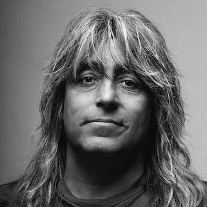

Народився: 20 лютого 1967 р
Рідне місто: Краків, Польща
Зріст: 175 см
Вага: 70 кг
Колір очей: Карий
Колір волосся: Чорний
Сімейний стан: Одружена з Агою
Діти: Марися та Лукаш
Улюблені предмети: Буддизм, Всесвіт та інопланетяни
Улюблена їжа: Тайські та індійські страви
Улюблені місця: Місця, де дуже добре видно зірки!
Улюблені групи: Френк Заппа, Redhot Chili Peppers і Rush
День народження: 31 серпня 1948
Рідне місто: Ганновер, Німеччина
Зріст: 184 см
Вага: 74 кг
Колір очей: Карий
Колір волосся: Блондин
Сімейний стан: розлучено
Діти: Марсель
Улюблені предмети: Індія філософія (йога, медитація)
Улюблена їжа: Спаржа з картоплею,Трюфель
Улюблені автомобілі: Mercedes SEC і SL
Улюблені види спорту: Наполегливі вправи
Улюблені кольори: Синій і чорний
Улюблені книги: Автобіографія йога та Алхіміка
Улюблені фільми: «Кримінальне чтиво» та Geschenkt ist noch zu teuer»
День народження: 25 травня 1948 р
Рідне місто: Ганновер, Німеччина
Зріст: 168 см
Вага: 61 кг
Колір очей: блакитний
Колір волосся:каштанове
Сімейний стан: одружений на Габі
Діти: Крістіан
Улюблена їжа: італійська, азіатська
Улюблені автомобілі: SLS AMG
Улюблені види спорту: Футбол, теніс
Улюблені кольори: чорний, червоний і синій
Улюблені книги: Біографії
Улюблені теми: Музика, політика
Улюблені фільми : Усе з Робертом Де Ніро / Джеком Ніколсоном / Майклом Дугласом
Улюблені актори : Дженніфер Лоуренс / Аль Пачіно / Леонардо Ді Капріо
Улюблені місця: Берлін, Лос-Анджелес, Париж, Нью-Йорк, Лондон

День народження: 25 жовтня 1955 р
Рідне місто: Ганновер, Німеччина
Зріст: 179 см
Вага: 68 кг
Колір очей: Блакитний
Колір волосся: каштанове
Діти: Ніколас
Сімейний стан: одружений на Беаті
Улюблена їжа: італійка
Улюблені автомобілі: Mercedes, Porsche
Улюблені види спорту: теніс , Футбол
Улюблені кольори: Candy Apple Red, Silver & Black
Улюблені книги: Біблія, історичні книги
Улюблені фільми: Одіссея 2001
Улюблені актори: Джек Ніколсон

Рідне місто: Гетеборг, Швеція
Зріст: 170 см
Вага: 81 кг
Колір очей: Карий
Колір волосся: Змішаний
Сімейний стан: Подруга
Діти: 2
Улюблена їжа: Хороший стейк
Улюблені автомобілі: Lamborghini
Улюблене Спорт: Хокей
Улюблені кольори: Жовтий
Улюблені книги: Жодної
Улюблені фільми: Інопланетяни
Now listen to my heart,
it says Ukrainia
Listening to the wind of change
An August summer night
Soldiers passing by
Listening to the wind of change
The world is closing in
Did you ever think
That we could be so close, like brothers
The future’s in the air
Can feel it everywhere
Blowing with the wind of change
Take me to the magic of the moment
On a glory night
Where the children of tomorrow dream away
In the wind of change
Walking down the street
Distant memories
Are buried in the past, forever
Now listen to my heart,
it says Ukrainia
Listening to the wind of change
Take me to the magic of the moment
On a glory night
Where the children of tomorrow dream away
In the wind of change
The wind of change
Blows straight into the face of time
Like a storm wind that will ring the freedom bell
For peace of mind
Let your balalaika sing
What my guitar wants to say
Take me to the magic of the moment
On a glory night
Where the children of tomorrow share their dreams
With you and me
Take me to the magic of the moment
On a glory night
Where the children of tomorrow dream away
In the wind of change...